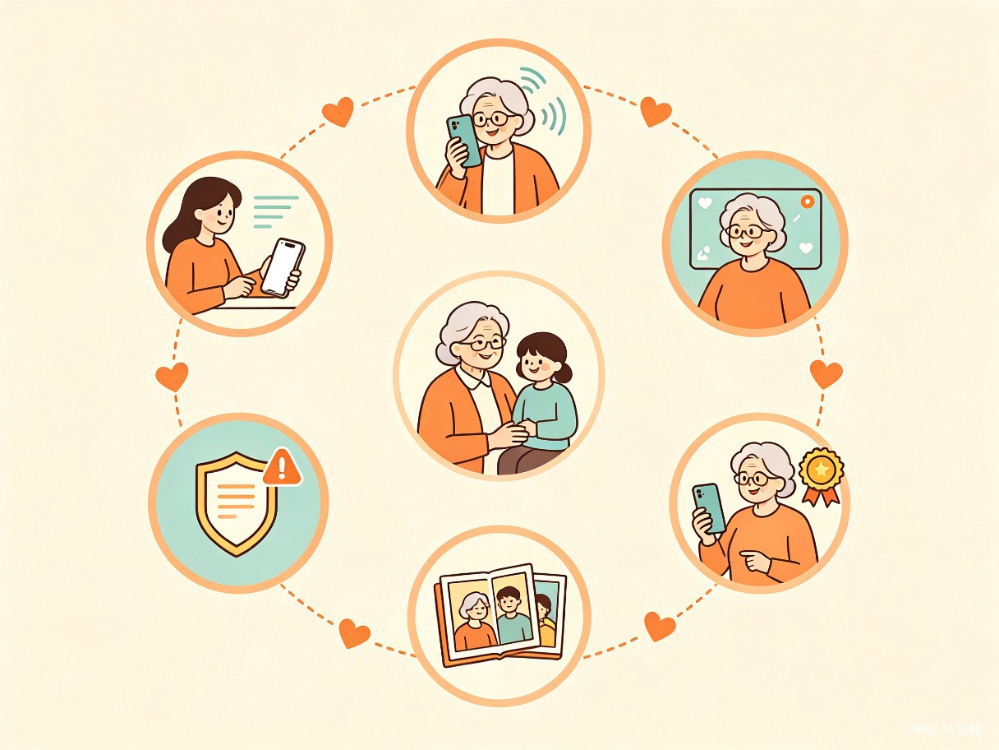
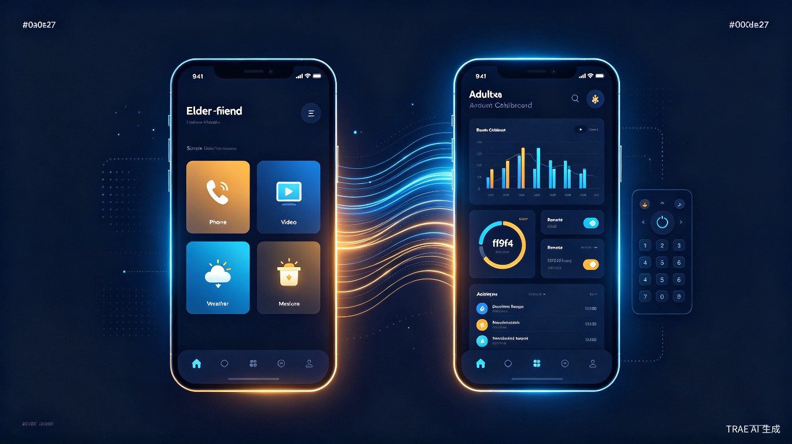

TRAE AI 创造力大赛 · 社会公益赛道
「时代同行」
中国 2.5 亿 老年人中，近一半仍处于数字世界之外
他们不是不想融入，而是没有人陪他们慢慢来
2.5亿
60岁以上
老年人口
老年人口
60%+
遭遇过
网络诈骗
网络诈骗
8.7万
人均
被骗金额
被骗金额
73%
学会后
一周内遗忘
一周内遗忘
向下滚动探索解决方案
↓
Core Innovation
为什么「时代同行」不一样
市面上首款系统性解决「年轻人教老年人用手机」这一真实痛点的产品
🤝
双端联动
子女端制定学习计划 + 远程指导，老人端 AI 语音陪伴学习。不是替代亲情，而是让教父母用手机变成有温度的事。
🎤
AI 语音导师
老人说想做什么，AI 用大字 + 语音逐步引导。支持方言识别，用老人最熟悉的语言沟通，把复杂操作拆解为简单步骤。
🛡
主动反诈守护
实时监测可疑操作，大字警告 + 语音提醒 + 一键通知子女。从「被动防御」到「主动守护」，人均潜在止损 8.7 万元。
Differentiation
从「界面放大」到「认知桥梁」
❌ 传统适老化方案
✕ 界面放大，但未解决认知障碍
✕ 单向远程操控，缺乏教学体系
✕ 无 AI 能力，无法主动守护
✕ 无代际互动，情感价值低
✕ 学了就忘，缺乏复习机制
✅ 时代同行
✓ 渐进式教学，解决认知鸿沟
✓ 双端联动，系统化学习路径
✓ AI 语音导师 + 主动反诈
✓ 亲情时光机，记录成长里程碑
✓ 操作微课 + 成就徽章激励
User Story
张奶奶的 30 天数字蜕变
一个真实的故事，展示产品如何改变一位独居老人的生活

1
设置学习计划
女儿在远程工作台为妈妈定制 8 周学习路径
2
AI 语音引导
张奶奶说"想给孙子发视频"，AI 一步步教她操作
3
第一次视频通话
第 3 天成功连线，看到孙子笑脸时激动落泪
4
反诈守护
第 15 天收到诈骗短信，AI 立刻拦截并通知女儿
5
家庭共享
第 30 天，张奶奶拍照分享家庭相册，获得成就徽章
Social Impact
影响力仪表盘
用数据量化社会价值
2.5亿
潜在受益人群
60岁以上老年人口
8.7万
人均财产安全
AI反诈潜在止损金额
5x
教学效率提升
远程工作台 vs 电话指导
24h
全天候陪伴
AI语音导师随时响应
Technology
技术实现
基于 TRAE 工具链，快速构建可运行的产品原型
老人语音输入
→
大语言模型
→
步骤拆解
→
视觉引导
↕ 实时同步 ↕
子女远程查看
→
WebSocket
→
标注反馈
→
录制微课
TRAE Work
TRAE IDE
React
Node.js
WebSocket
Web Speech API
微信小程序
大语言模型
Product
双端产品形态
Web 应用 + 微信小程序，零安装门槛
